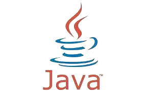
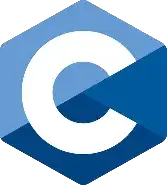
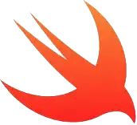

Go
Combina la eficiencia y rendimientos de lenguajes como C con la simplicidad y productivividad de lenguajes modernos
la posicion en el ranking de stack overflow es 11

JAVA
Java es un lenguaje de programacion ampliamente utiizado para codificar aplicaciones web
la posicion en el ranking de stack overflow es 8
Go
La intencion de su creación fue extender al lenguae de programción C y mecanismos que permitan la manipulacion de objetos
la posicion en el ranking de stack overflow es 10
JAVASCRIPT
JavaScript es una de las tecnologias fundamentales de la WWW , junto con TML y CSS
la posicion en el ranking de stack overflow es 1
.webp)
Swift
Es un lenguaje multiparadigma (orientado a objetos, funcional, genérico) creado para desarrollar software en plataformas Apple : iOS, macOS, tvOS, watchOS, e incluso visionOS
la posicion en el ranking de stack overflow es 16
TYPESCRIPT
TypeScript es un lenguaje de programación de código abierto, lanzado en 2012 por Microsoft. Está diseñado para desarrollar aplicaciones en el lado del cliente y del servidor.
la posicion en el ranking de stack overflow es 6